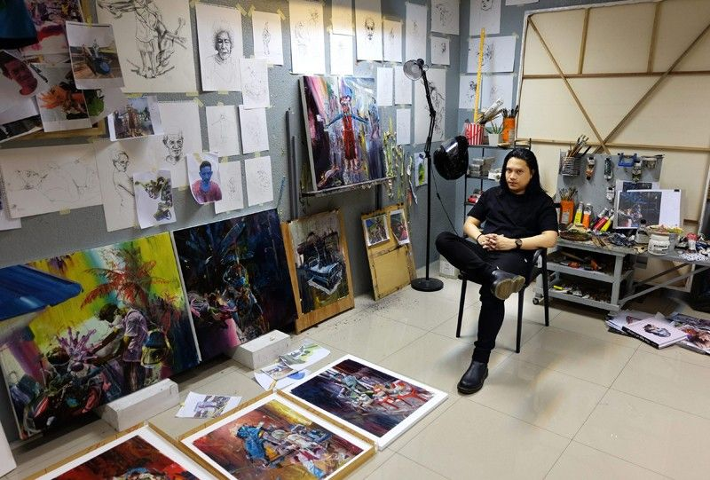

Ang Kiukok
Ang Kiukok was a Filipino painter known for his expressive, Cubist-like works.
He often chose dynamic or disturbing subject matter, frequently depicting rabid dogs, crucifixions, and screaming figures in an abstracted geometric style.
When asked why he often chose subjects full of such angry he once replied "Why not? Open your eyes. Look around you. So much anger, sorrow, ugliness. And also madness."
(c) artnet.com
Ernest Concepcion
Ernest Concepcion (b. 1977) is a Filipino painter based in Manila, Philippines, who combines the motif of classical landscape with contemporary caricatures and representations that take one into the framework of warfare while uncovering the effects of a larger 20th-Century, Postwar existence.
(c) https://ernestconcepcion.com/bio/
View Artist

Ronson Culibrina
Ronson Culibrina is a contemporary Filipino artist recognised for his appropriation paintings that reference works by prominent Filipino and international artists. In his oil paintings, which often juxtapose garish psychedelic colours with more subdued tones, Culibrina addresses current socio-political concerns such as power dynamics in art history, globalisation, and human interventions in nature.
(c) https://ocula.com/artists/ronson-culibrina/
View Artist